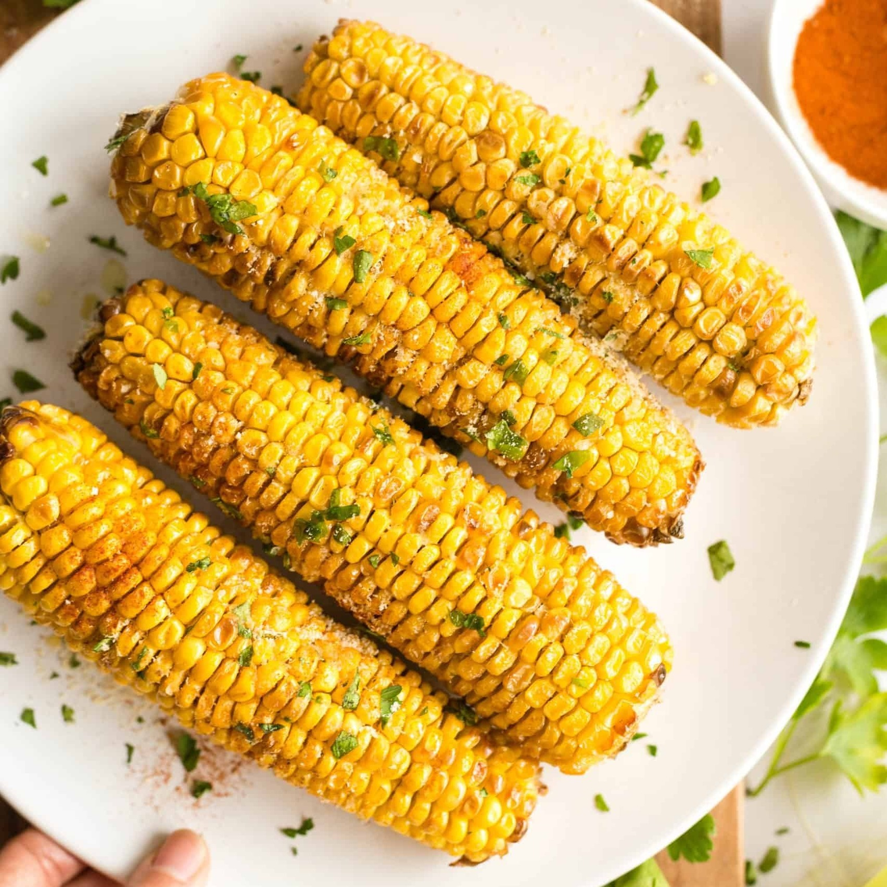

Ingredients:
Fresh corn on the cob Butter Salt and pepper Optional: herbs or spices for extra flavor
Instructions:
Husk the fresh corn and remove silk. Boil, grill, or roast the corn until tender. Spread butter on the hot corn. Sprinkle with salt and pepper to taste. Optionally, add herbs or spices for extra flavor. Serve hot and enjoy the natural sweetness of fresh corn.
Corn
Author
Celebrate the natural sweetness of fresh corn with this simple recipe. Whether grilled, boiled, or roasted, this versatile dish pairs perfectly with butter, salt, and pepper. Enjoy the pure taste of corn in a quick and delightful side.
Fresh corn on the cob Butter Salt and pepper Optional: herbs or spices for extra flavor
Instructions:
Husk the fresh corn and remove silk. Boil, grill, or roast the corn until tender. Spread butter on the hot corn. Sprinkle with salt and pepper to taste. Optionally, add herbs or spices for extra flavor. Serve hot and enjoy the natural sweetness of fresh corn.